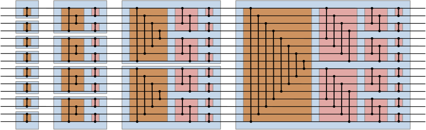
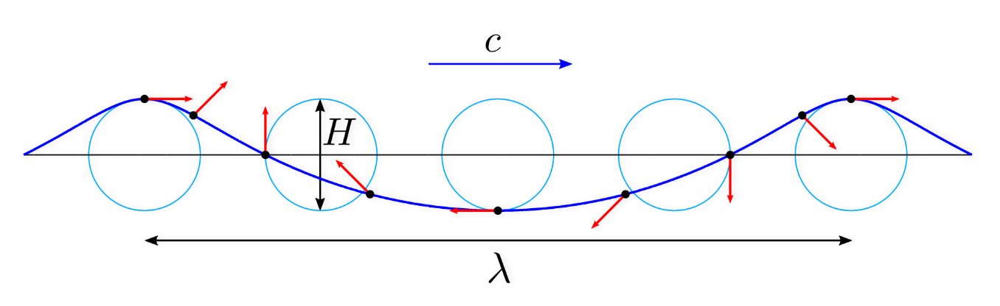
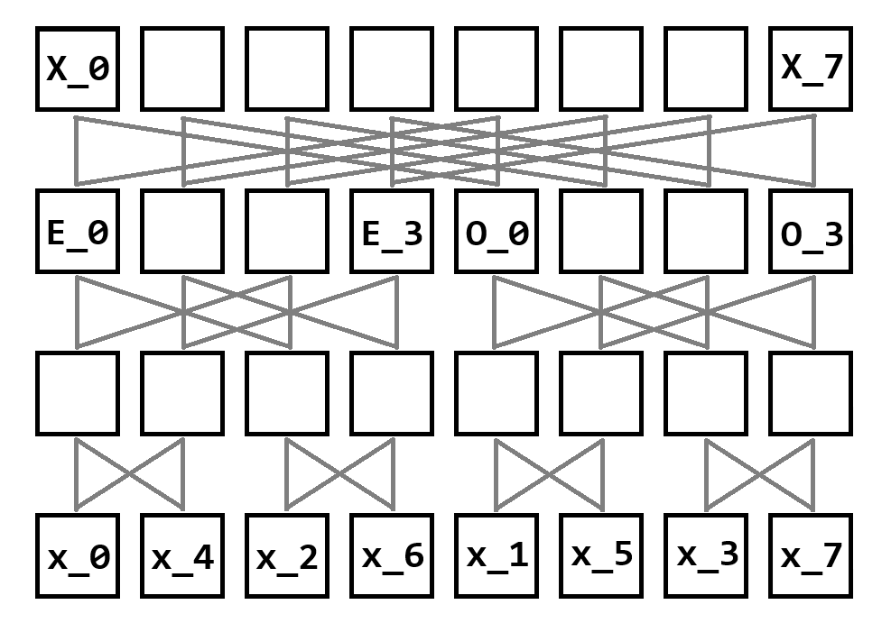
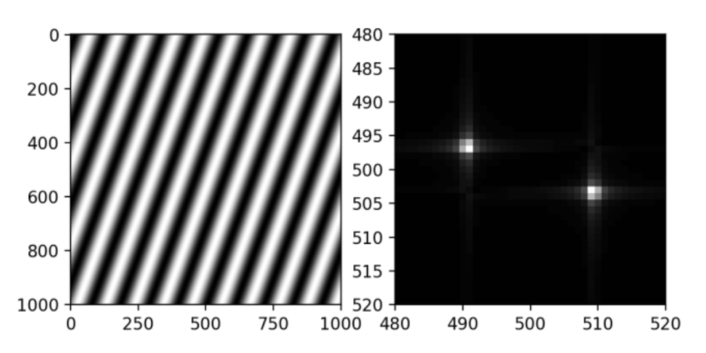
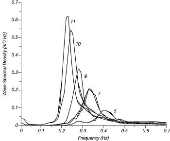
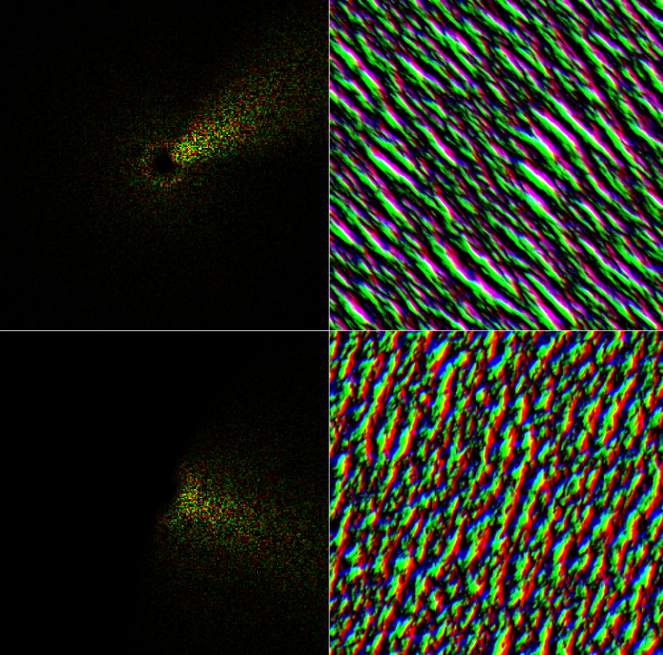

During the first week of class of the Fall 2024 semester, I made an impulsive decision to drop my Introduction to Computer Graphics class in favor of a graduate graphics class my friend recommended to me, named Physically Based Modeling. The decision turned out to be a good one as I had a bunch of fun in that class working on some interesting projects, stuff I wouldn't have gotten around to doing otherwise.
The way the class worked was the semester was partitioned into two to three week chunks and for every chunk we were assigned a project to do on some topic related to physically based modeling. Then, at the end of the chunk, everyone would present what they did for the past few weeks. The fun part was that once we met the minimum requirements, we were encouraged to add extra features that may or may not be related to the original topic. It was cool to come up with your own features, whether it be performance or graphics related, and exciting to see what everyone else came up with during the presentations.
Although I didn't really get to go as deep into each project as I would've perhaps liked due to how the class was structured, I think going over many different topics was a strength of the class. It allowed me to kind of get a good feel for each of the topics before moving onto the next one. If you're interested in physics and graphics programming, I would highly recommend giving the class a shot.
For the first project of the semester, we were assigned to render a ball bouncing around in a box. This project was just meant to get you familiar with your graphics library of choice and as such, the requirements were rather lax. You could model the ball as some frictionless sphere with a 1.0 coefficient of restitution and you didn't even have to implement continuous collision detection. However considering I already had an entire graphics engine setup, I wanted to challenge myself and account for friction, and therefore angular velocity / acceleration.
We need some way of storing and updating the orientation of each sphere relative to their object space orientation. Usually, we would use pitch/yaw/roll rotation matrices, however it's hard to rotate along an arbitrary axis with this method. You can encode an arbitrary axis-angle rotation into a matrix, but a more elegant and widely used solution exists: quaternions.
A quaternion is a four-dimensional value, $(s, i, j, k)$, that represents a rotation + scaling in 3D space, much like a un-normalized axis-angle rotation matrix. They were originally discovered as an extension to the complex numbers, but in this context you can just think of them as a weird rotation matrix. Specifically, a rotation of angle $\theta$ around the unit axis $(x, y, z)$ can be represented by the quaternion
$$\left(\cos{\left(\frac{\theta}{2} \right)}, x \sin{\left(\frac{\theta}{2} \right)}, y \sin{\left(\frac{\theta}{2} \right)}, z \sin{\left(\frac{\theta}{2} \right)} \right)$$
If you have two quaternions $p, q$, and wanted to know the quaternion that represented first applying $p$ then $q$, you can just multiply them together. Notice that just like matrices, quaternion multiplication is not commutative. Then, if you have a vector $v$ and want to find the vector after applying the rotation quaternion $q$, you can compute
$$qv_qq^*$$
where $q^*$ is the conjugate of $q$ and $v_q$ is just $(0, v_x, v_y, v_z)$. Computing the conjugate is much like complex numbers, you just keep the scalar portion and negate the imaginary portions, so $(s, -i, -j, -k)$. Finally, the resulting vector will be encoded in the imaginary portion of the result.
Since you will lose some precision with floating point math, you will have to constantly renormalize your quaternions to avoid inadvertently scaling your vectors when applying the quaternion transform. This is actually a big advantage that quaternions have over axis-angle rotation matrices, as with rotation matrices you would have to re-orthogonalize the matrix which involves something like Gram-Schmidt, as opposed to just normalizing a 4D vector.
Quaternions also have a bunch of other advantages over axis-angle matrices: they only need 4 numbers to store, multiplying them is much faster (16 or so multiplications vs 64), you can blend between two quaternions using SLERP, and you can easily convert from a quaternion back to an axis-angle if needed.
Before we figure out what to do in the event of a collision, lets first figure out what to do when there are no collisions. For each sphere, I will keep track of its position and velocity as a 3D vector, and for each timestep I'll use the previous timestep's position and velocity with the current timestep's acceleration (stuff like gravity, collisions) to compute the current timestep's position and velocity. In other words:
$$p_{t + 1} = p_{t} + v_{t}$$ $$v_{t + 1} = v_{t} + a_{t}$$
What we have here is Eulerian integration. It's very simple but also has a tendency to be very unstable, but for now it's perfectly good enough. We can actually do the same thing with orientation and angular velocity, we use a quaternion to keep track of the current orientation, and we use a 3D vector to keep track of the angular velocity (the direction tells us the axis, the magnitude tells us the rotation velocity around that axis). Putting it all together, here is what updating one sphere for one timestep looks like:
Sphere s = this.spheres.get(i);
//update position / orientation
s.pos.addi(s.vel.mul(settings.timeStep));
Vec3 axis = new Vec3(s.ang_vel);
float omega = axis.length();
axis = axis.normalize();
Quaternion quat_rot = MathUtils.quaternionRotationAxisAngle(omega * settings.timeStep, axis.x, axis.y, axis.z);
Quaternion n_orient = quat_rot.mul(s.orient);
n_orient.normalize();
s.orient = n_orient;
//update velocity / angular velocity
s.vel.addi(accel[i]);
s.ang_vel.addi(ang_accel[i]);
The reason why we store the angular velocity in this odd format is so that directly adding two velocities makes sense, useful for when we want to add some angular acceleration to the angular velocity.
In any physics engine there are two parts to handling collisions, collision detection and collision resolution. Detection refers to figuring out between which two objects the collision happened, at what point did it happen, what were the relative velocities at that point, etc. Then, resolution will take all that information and update the state of the two objects as to provide a physically accurate explanation of how the collision would play out. Usually that would involve updating the position, velocity, and angular velocity of each object involved.
Here, the resolution step is significantly more complicated than the detection step, but it's mainly due to the simplicity of the objects involved in the collisions. However once your primitives become more complicated, arbitrary triangle meshes for example, the detection step gets much more involved while the resolution step doesn't change much. For here, I will just cover the resolution step and I'll go over detection in more detail when covering the rigid body physics engine.
From the detection phase, we are supplied with which two bodies are colliding, where the collision point is, and the collision normal.
Body a, b;
Vec3 cpt; //collision point in world space
Vec3 unit_norm; //should be facing towards body a
First, we compute the relative velocity of b from the perspective of a
at the collision point.
//compute relative velocity from a's perspective.
//this means rvel should be pointing in the same direction as unit_norm if there is a collision
Vec3 rvel = calcBodyPtVel(cpt, this.b);
rvel.subi(calcBodyPtVel(cpt, this.a));
Next, we see if there is actually a collision happening. We can tell by seeing if the dot product between
rvel and unit_norm is non-negative. If it is negative, then it means the two
bodies are separating and we don't want to trigger any collision here.
float norm_mag = MathUtils.dot(unit_norm, rvel);
if (norm_mag < 0) {
//no collision, they are travelling away
return;
}
If there is a collision, we can separate the relative velocity out into its normal and tangent components. We can also compute some other useful stuff.
Vec3 norm = unit_norm.mul(MathUtils.dot(unit_norm, rvel));
Vec3 tang = rvel.sub(norm);
float tang_mag = tang.length();
Vec3 unit_tang = new Vec3(tang).normalize();
//vector from center of shape to collision point
Vec3 radiusvec_a = new Vec3(a.pos, cpt);
Vec3 radiusvec_b = new Vec3(b.pos, cpt);
Now, we can actually handle the normal and tangent components separately. First the normal component:
// - normal component
float norm_scalar = 0; //used to compute friction
{
//axis of rotation that the normal component will apply torque to
Vec3 norm_rotaxis_a = MathUtils.cross(unit_norm, radiusvec_a);
Vec3 norm_rotaxis_b = MathUtils.cross(radiusvec_b, unit_norm);
//moment of inertia around axes in question
float norm_inv_moment_a = 0, norm_inv_moment_b = 0;
if (norm_rotaxis_a.lengthSq() != 0) {
norm_rotaxis_a.normalize();
norm_inv_moment_a = 1.0f / calcMomentAroundAxis(itensorworld_a, norm_rotaxis_a);
}
if (norm_rotaxis_b.lengthSq() != 0) {
norm_rotaxis_b.normalize();
norm_inv_moment_b = 1.0f / calcMomentAroundAxis(itensorworld_b, norm_rotaxis_b);
}
//compute normal scalar.
float norm_inv_mass_sum = a.inv_mass + b.inv_mass;
norm_inv_mass_sum += MathUtils.cross(radiusvec_a, unit_norm).lengthSq() * norm_inv_moment_a;
norm_inv_mass_sum += MathUtils.cross(radiusvec_b, unit_norm).lengthSq() * norm_inv_moment_b;
norm_scalar = norm_mag * (1.0f + coll_restitution) / norm_inv_mass_sum;
//compute accelerations due to force
accel_a.addi(unit_norm.mul(norm_scalar * a.inv_mass));
accel_b.addi(unit_norm.mul(-norm_scalar * b.inv_mass));
angaccel_a.addi(MathUtils.cross(unit_norm, radiusvec_a).mul(-norm_scalar * norm_inv_moment_a));
angaccel_b.addi(MathUtils.cross(unit_norm, radiusvec_b).mul(norm_scalar * norm_inv_moment_b));
}
And finally the tangent component. Notice that we saved norm_scalar. This is so we can do static / dynamic
friction according to Coulumb's Law of Friction.
// - tangent component
{
//axis of rotation that the tangent component will apply torque to
Vec3 tang_rotaxis_a = MathUtils.cross(unit_tang, radiusvec_a);
Vec3 tang_rotaxis_b = MathUtils.cross(radiusvec_b, unit_tang);
//moment of inertia around axes in question
float tang_inv_moment_a = 0, tang_inv_moment_b = 0;
if (tang_rotaxis_a.lengthSq() != 0) {
tang_rotaxis_a.normalize();
tang_inv_moment_a = 1.0f / calcMomentAroundAxis(itensorworld_a, tang_rotaxis_a);
}
if (tang_rotaxis_b.lengthSq() != 0) {
tang_rotaxis_b.normalize();
tang_inv_moment_b = 1.0f / calcMomentAroundAxis(itensorworld_b, tang_rotaxis_b);
}
//compute tangent scalar
float tang_inv_mass_sum = a.inv_mass + b.inv_mass;
tang_inv_mass_sum += MathUtils.cross(radiusvec_a, unit_tang).lengthSq() * tang_inv_moment_a;
tang_inv_mass_sum += MathUtils.cross(radiusvec_b, unit_tang).lengthSq() * tang_inv_moment_b;
//friction
float tang_scalar = tang_mag / tang_inv_mass_sum; //static friction
if (tang_scalar > norm_scalar * static_friction) {
//if the force is too great for static friction, switch to dynamic friction
tang_scalar = norm_scalar * dynamic_friction;
}
accel_a.addi(unit_tang.mul(tang_scalar * a.inv_mass));
accel_b.addi(unit_tang.mul(-tang_scalar * b.inv_mass));
angaccel_a.addi(MathUtils.cross(unit_tang, radiusvec_a).mul(-tang_scalar * tang_inv_moment_a));
angaccel_b.addi(MathUtils.cross(unit_tang, radiusvec_b).mul(tang_scalar * tang_inv_moment_b));
}
Since we're dealing with spheres, the moment of inertia is the same regardless of which axis we choose to apply torque. Later with more arbitrary shapes, we'll need to use the moment of inertia tensor to find the correct moment of inertia for the specific axis that we are applying torque to.
Finally, we want to shift both bodies such that they are just barely colliding. We do this so that bodies that are supposed to be resting on top of each other can remain in contact.
float slop = 0.01f; //allow penetrating objects to keep penetrating slightly
float correction = Math.max(penetration - slop, 0);
Vec3 poscorr_a = unit_norm.mul(correction * a.inv_mass / (a.inv_mass + b.inv_mass));
Vec3 poscorr_b = unit_norm.mul(-correction * b.inv_mass / (a.inv_mass + b.inv_mass));
a.pos.addi(poscorr_a);
b.pos.addi(poscorr_b);
Since I had just completed my raytracing projects and was too lazy to go find meshes or create them myself, I quickly threw together some simple ray-casted graphics. It had the advantage that shadows were free and the spheres didn't have any weird bumps on them due to surface normal interpolation.
As perfectly smooth spheres wouldn't show off all the work I put into supporting friction, I also added a snazzy texture on the sphere, whether or not the ray bounces is determined by where it lands in the model space of the sphere.
For the second project, we had been going over flocking algorithms in lecture, so we were assigned to do something related to flocking. At its core, flocking is just a particle system where the motion of particles is influenced by other particles surrounding it. This sounds very similar to Smoothed Particle Hydrodynamics, something I had already done a project on before. So for this project, I wanted to do SPH, but additionally optimize it as much as possible.
SPH simulates fluids by discretizing it by mass as opposed to methods like Lattice Boltzmann which discretizes space. It's a particle based interpretation of the Navier-Stokes equations:
$$\rho \frac{dv}{dt} = -\nabla p + \mu \nabla^2 v + f$$
So at each point, the acceleration of the fluid, $\rho \frac{dv}{dt}$, is equal to the sum of forces from the pressure gradient, $-\nabla p$, viscous diffusion, $\mu \nabla^2 v$, and external forces, $f$. Since we've concentrated all the mass at the particles, we just need to consider the pressure and viscosity at each particle, much better than an infinite continuum of points.
The issue is that since we've concentrated all the mass at the particles, things like the pressure or density field are not well defined. This is why we apply a smoothing kernel to each particle to 'spread out' the mass of each particle. This means that particles only interact with other particles within a limited range, or 'smoothing radius', which enables quite a few optimizations.
Since each particle only interacts with other particles in a limited radius, if we can somehow only loop through the particles that are close to the current particle, then we can speed up the simulation significantly. The idea behind spatial hashing is to partition space into a bunch of grid cells, then for each particle we determine which grid cell it is in, then loop through only the particles in adjacent grid cells.
First, for each grid cell we assign a hash ID (thus the name Spatial Hashing). Then, we sort all the particles by their grid hash IDs. Finally, for each unique ID, we compute the index of the first particle that has that ID, which allows us to iterate through all particles within a cell. Of course if two cells happen to hash to the same ID, then we'll iterate over some extra particles, but that should be infrequent enough with a decent hash function.
So the first optimization is to speed up the sorting process. In my original implementation I just transferred the particles to the CPU to sort, then transferred the sorted list of particles back to the GPU. However, CPU-GPU memory transfers are a huge bottleneck when doing GPU programming, and doing this sort entirely on the GPU would probably speed it up immensely.

Each horizontal line represents a value and each vertical bar represents a comparator that compares the two values and swaps them if the top one is greater than the bottom one. The idea is that if you pass an arbitrary array into the left side of this system, this fixed system of comparators will make it so that your array will be sorted by the time it gets to the right side.
To prove the correctness of bitonic merge sort, we can use the zero-one principle which states that if a sorting network can correctly sort all sequences of zeroes and ones, it can also correctly sort arbitrary input. At a high level, each blue box expects the top and bottom half of its input to be independently sorted, and the comparators within the box will somehow merge the two sorted halves into one sorted whole. Observe that each independent element is already sorted, so our base case is covered. I just need to prove that each blue box correctly merges two sorted arrays.
Let the top half of the input into the orange box be $A[0], \cdots, A[n - 1]$ and the bottom half be $B[0], \cdots, B[n - 1]$. It's assumed that $A[0] \leq A[1] \leq \cdots \leq A[n - 1]$ and $B[0] \leq B[1] \leq \cdots \leq B[n - 1]$. After the orange box finishes the top and bottom half become $A', B'$ respectively, defined as $A'[i] = \min(A[i], B[n - 1 - i])$ and $B'[i] = \max(A[n - 1 - i], B[i])$. I'll prove that after the orange box executes, the following properties will become true:
First the proof for $1)$. We'll cover this in 3 cases:
Next the proof for $2)$. Observe that as we increase $i$, $A[i]$ increases monotonically and $B[n - 1 - i]$ decreases monotonically. If we take the minimum of the two, the first portion will always equal $A[i]$ and the second will equal $B[n - 1 - i]$. Since one is increasing and the other is decreasing, $A'[i]$ will be bitonic. We can do the same thing with $B'[i]$, except it will just be bitonic in the other direction ('hill' vs 'valley').
We'll call $1)$ the separation lemma and $2)$ the bitonicity lemma. Finally, I'll show that we can also prove the separation and bitonicity lemmas for the red boxes given bitonic input. Let the top half of the input be $A$ and the bottom half be $B$ just like before. However the output is different with $A'[i] = \min(A[i], B[i])$ and $B'[i] = \max(A[i], B[i])$.
Proof for $1)$. WLOG I'll assume that the input is a 'hill' bitonic sequence, so the prefix and suffix consist of $0$s and the middle is $1$s. Observe that if $A'$ ever has any $1$s, then that implies that $B'$ consists entirely of $1$s. Likewise, if $B'$ ever has any 0s, that implies that $A'$ consists entirely of $0$s. Therefore, it's never the case that $A'$ has a $1$ and $B'$ has a $0$.
Proof for $2)$. WLOG I'll assume that the input is a 'hill' bitonic sequence, so the prefix and suffix consist of $0$s and the middle is $1$s. Observe that if the $1$s are entirely contained within $A$ or $B$, the result will be $A'$ entirely consisting of $0$s and $B'$ being equal to the half that contained the $1$s, therefore $A', B'$ are bitonic. Then, the only remaining case is if the subarray of $1$s is split between the suffix of $A$ and prefix of $B$, which means that $A$ is monotonically increasing and $B$ is monotonically decreasing. We can use similar reasoning to when we proved $2)$ for the brown boxes to show that $A', B'$ are bitonic in this case.
Since each red box separates and maintains bitonicity for its two halves, we can use induction to prove that after the red boxes are done, the entire array will be sorted via the separation lemma.
My second optimization was to speed up memory accesses by utilizing the thread group local cache. Compared to accessing GPU main memory, the thread group local cache is around 50x faster. So my idea is to make each thread in each group first pull a few particles from main GPU memory to the group cache, then afterwards all the threads in the group can just reference the cache.
The main limitation to this is that the amount of memory each thread group can access locally is very limited. This may change depending on the GPU that you have, but I found that I'm limited to around 16KB of local memory per thread group. Since my workgroups were relatively small, that didn't matter too much but it's something to keep in mind. So to setup local memory, you just declare this somewhere in the global context:
shared Particle local_particle_data[gl_WorkGroupSize.x];
Then before I do any computation, I tell each thread to pull a particle from the next grid cell into the local cache, with an execution barrier to make sure they're all synchronized.
//each thread looks at local_id 0 particle, and figures out the hash for that one
int local0_hash = computeHash(local0_hpos + d_hpos[i]);
int local0_start = hashLUT[local0_hash];
//then, load the particle into local memory
if(local0_start + local_id < nr_particles) {
local_particle_data[local_id] = particleData[local0_start + local_id];
}
barrier();
Finally I just add a check to when we're loading particles from memory and load it from the local cache if possible.
Particle getParticle(int ind, int local_particle_start) {
if(ind >= local_particle_start && ind < local_particle_start + gl_WorkGroupSize.x) {
return local_particle_data[ind - local_particle_start];
}
return particleData[ind];
}
We can actually also use thread local memory to speed up our implementation of bitonic merge sort. For blocks that are less than or equal to 1024 or so, we can do the sort entirely within thread local memory and only resort to using GPU main memory when the number of particles gets too large to fit within local memory.
In total, I managed to increase the amount of particles from 4000 to 64000 at 60fps. This is not bad, however I've seen other simulations comfortably handle over 1 million particles so I still have a long way to go.
I also improved the quality of the density field rendering, adding some normal mapping to the edges and shadows.
For the third project we were assigned to create something related to a spring-mass-damper system. This project was to show how higher order integration techniques such as RK4 improve the stability and accuracy of your simulation. I also wanted to explore some alternative and perhaps more performant methods of achieving this stability, and since I was interested in physics for games I didn't really care about accuracy. Therefore, I also looked into position based dynamics, specifically XPBD.
RK4 is a fourth order integration technique which means that the total accumulated error is on the order $h^4$ where $h$ is the timestep. Implementing it is actually quite easy, it pretty much boils down to making a bunch of first order guesses as to what the next value is, then taking a weighted average of the guesses.
More formally, lets say you have an unknown function $y(t)$ and have a way to sample $\frac{dy}{dt} = f(t, y)$ and have some known point $y(t_0) = y_0$. Then given the step size $h$, RK4 will predict the next point as follows: $$y_{n + 1} = y_{n} + \frac{h}{6} (k_1 + 2k_2 + 2k_3 + k_4)$$ where $k_1, k_2, k_3, k_4$ are defined as $$k_1 = f(t_n, y_n)$$ $$k_2 = f\left(t_n + \frac{h}{2}, y_n + h \frac{k_1}{2} \right)$$ $$k_3 = f\left(t_n + \frac{h}{2}, y_n + h \frac{k_2}{2} \right)$$ $$k_4 = f\left(t_n + h, y_n + h k_3 \right)$$ Notice that $f(t, y)$ is pretty much your normal euler integration step, so you're doing 4 times the work in exchange for greatly improved stability and accuracy. If you need to not only maintain position but also velocity, $f$ would instead compute acceleration, and you'd use the computed velocity as the $f$ for position. The code for one timestep looks something like this:
private void RK4Step(float dt) {
Vec3[] k1p = new Vec3[this.nodes.length];
Vec3[] k1v = new Vec3[this.nodes.length]; //we already know k1v
for (int i = 0; i < this.nodes.length; i++) {
k1p[i] = new Vec3(this.nodes[i].pos);
k1v[i] = new Vec3(this.nodes[i].vel);
}
Vec3[] k1a = calcAccel(k1p, k1v);
Vec3[] k2p = adds(k1p, k1v, dt / 2.0f);
Vec3[] k2v = adds(k1v, k1a, dt / 2.0f);
Vec3[] k2a = calcAccel(k2p, k2v);
Vec3[] k3p = adds(k1p, k2v, dt / 2.0f);
Vec3[] k3v = adds(k1v, k2a, dt / 2.0f);
Vec3[] k3a = calcAccel(k3p, k3v);
Vec3[] k4p = adds(k1p, k3v, dt);
Vec3[] k4v = adds(k1v, k3a, dt);
Vec3[] k4a = calcAccel(k4p, k4v);
//aggregate results
addsi(k1v, k2v, 2);
addsi(k1v, k3v, 2);
addsi(k1v, k4v, 1);
muli(k1v, dt / 6.0f);
addsi(k1a, k2a, 2);
addsi(k1a, k3a, 2);
addsi(k1a, k4a, 1);
muli(k1a, dt / 6.0f);
for (int i = 0; i < this.nodes.length; i++) {
this.nodes[i].prev_pos.set(this.nodes[i].pos);
this.nodes[i].pos.addi(k1v[i]);
this.nodes[i].vel.addi(k1a[i]);
}
this.handleCollisions(dt);
}
As you can see it's pretty easy to implement. Once you have some first order integration method, it isn't very hard to copy the code around to implement RK4.
In both euler integration and RK4 we maintain the position and velocity and gather acceleration from each timestep to compute the next position and velocity. PBD is an integration approach that omits velocity and instead directly works on the positions. This gives it a massive advantage in terms of stability and performance over higher order integration methods like RK4 while sacrificing accuracy. In other words, PBD is perfect for a game physics engine.
In PBD bodies and particles interact with each other via constraints. A constraint $C$ is real valued function that is satisfied when $C(x_1, \cdots, x_n) = 0$. For example, we can have a distance constraint between two points: $$C(p_1, p_2) = |p_1 - p_2| - d$$ which means that for $C(p_1, p_2)$ to be satisfied, $p_1$ and $p_2$ have to be exactly $d$ units apart. Every timestep, the solver will try to solve each constraint independently. To solve an arbitrary constraint, we first compute $\lambda$ for all participating particles in the constraint: $$\lambda = \frac{-C}{m_1 |\nabla C_1|^2 + \cdots + m_n |\nabla C_n|^2}$$ where $\nabla C_i$ is the gradient of the constraint function with respect to particle $i$, or in other words the direction that particle $i$ should move to increase $C$ the fastest. Then, the correction of particle $i$ is $$\lambda m_i \nabla C_i$$ The solver will go through each constraint, updating the particle positions immediately after solving each constraint, so subsequent constraints will see the updated positions of the particles. After several iterations of the solver, it will eventually converge to a solution.
The cool part about PBD is that we're not restricted on defining constraints between only two points, we can actually define one constraint on as many points as we want, as long as we can compute $\nabla C$. One useful example of this are volume constraints. Usually with spring systems, we would have to define many cross springs to keep a structure from collapsing inwards from itself, but using PBD we can first tetrahedralize our structure then define a volume constraint on every tetrahedron. We also get volume conservation for free!
One issue you may have noticed about PBD is that the 'stiffness' of all the constraints in the system isn't really controllable. You can make the system arbitrarily stiff by increasing the number of solver iterations per timestep, or decreasing the timestep itself, but there is no per-constraint control for stiffness. The key improvement that XPBD (eXtended Position Based Dynamics) brings is to try to decouple stiffness from the timestep or number of iterations by introducing 'compliance' to constraints. So the new formulation for $\lambda$ is $$\lambda = \frac{-C}{m_1 |\nabla C_1|^2 + \cdots + m_n |\nabla C_n|^2 + \frac{\alpha}{h^2}}$$ where $\alpha$ is the 'compliance' of the constraint and $h$ is the timestep. Observe that if $\alpha = 0$, then the constraint will become infinitely stiff, or identical to PBD.
We can first compare the results of euler integration and RK4 to see how a higher order integration method is more stable.
Next, lets compare RK4 and XPBD on a more complicated mesh. I took the stanford bunny and tetrahedralized it using my own tetrahedralization algorithm. It's good enough for this mesh, but it's really bad on low poly meshes.
Finally, I implemented a cool rendering technique from this video where instead of simulating physics directly on a high resolution mesh, we simulate it on a decimated mesh and use the low poly simulated mesh as an animation skeleton for the high resolution one.
For the fourth project we were assigned to create a 3D rigid body physics engine that could support cubes. In addition to cubes, I added support for arbitrary k-dop shapes, as well as capsules (and spheres as a special case of a capsule). I also implemented two phase collision detection using a BVH in the broad phase.
Collision detection in rigidbody physics engines usually happens in two phases, the broad and narrow phase. The broad phase is responsible for detecting which pairs of bodies could be colliding, and the narrow phase takes in the list of pairs supplied by the broad phase and actually determines if they're colliding. It's also the narrow phase that generates all the information required by collision resolution.
I already covered the collision resolution step in the first project. I pretty much reused the resolution step from that project for this rigidbody physics engine. But as you'll see, the collision detection phase gets much more involved.
An ideal broad phase would simply return only the pairs of bodies that are colliding to the narrow phase. However this is usually infeasible in most cases as then you're pretty much doing all the work of the narrow phase anyways, defeating the point of the broad phase. So instead, the broad phase usually utilizes some spatial partitioning technique to quickly prune out pairs that are not possible to be colliding, and for pairs that could plausibly be colliding it does a quick check via checking bounding boxes.
For my broad phase, I first generated a 18-dop bounding box for each body. Each physics body consists of some information such
as mass, velocity, position, as well as a Shape. Every shape has to have a way to construct a 18-dop bounding box
given an arbitrary orientation. For example, this is how capsule bounding boxes are generated:
@Override
public KDOP calcBoundingBox(Quaternion orient, Vec3 pos) {
Pair ends = this.getEnds(orient, pos);
Vec3 e1 = ends.first;
Vec3 e2 = ends.second;
float[] bmin = new float[KDOP.axes.length];
float[] bmax = new float[KDOP.axes.length];
for (int i = 0; i < KDOP.axes.length; i++) {
bmin[i] = MathUtils.dot(e1, KDOP.axes[i]) - this.radius;
bmax[i] = MathUtils.dot(e1, KDOP.axes[i]) + this.radius;
}
for (int i = 0; i < KDOP.axes.length; i++) {
bmin[i] = Math.min(bmin[i], MathUtils.dot(e2, KDOP.axes[i]) - this.radius);
bmax[i] = Math.max(bmax[i], MathUtils.dot(e2, KDOP.axes[i]) + this.radius);
}
return new KDOP(bmin, bmax);
}
Then I created a BVH to quickly find all pairs of intersecting bounding boxes. The BVH code was relatively straightforwards to write. Each BVH node stored its own bounding box, its children, and in the case it was a leaf, the bounding boxes and indices of the bodies it contains.
class BVHNode {
public KDOP bounding_box;
public BVHNode a = null, b = null;
public boolean is_leaf;
public ArrayList> boxes = null;
}
So the actual BVH just implements this buildTree member function that takes in a list of bounding box, body index pairs
and builds a BVHNode tree, and saves the root for queries. In buildTree the first thing we do is
compute the bounding box of all the boxes passed in
float[] bmin = new float[KDOP.axes.length];
float[] bmax = new float[KDOP.axes.length];
float[] dim = new float[KDOP.axes.length];
float[] med = new float[KDOP.axes.length];
for (int i = 0; i < aabb_list.size(); i++) {
KDOP k = aabb_list.get(i).first;
for (int j = 0; j < KDOP.axes.length; j++) {
if (i == 0) {
bmin[j] = k.bmin[j];
bmax[j] = k.bmax[j];
}
bmin[j] = Math.min(bmin[j], k.bmin[j]);
bmax[j] = Math.max(bmax[j], k.bmax[j]);
}
}
for (int i = 0; i < KDOP.axes.length; i++) {
dim[i] = bmax[i] - bmin[i];
med[i] = (bmax[i] + bmin[i]) / 2.0f;
}
KDOP cur_bb = new KDOP(bmin, bmax);
Then we try to look for the axis of greatest separation. This entire part of partitioning the BVH node could use some work, but I just implemented the first thing that came to mind.
//just look for maximum separation along all axes
int best_sep = 0;
float max_sep = -1;
for (int i = 0; i < KDOP.axes.length; i++) {
if (dim[i] > max_sep) {
max_sep = dim[i];
best_sep = i;
}
}
Finally we have some logic for either creating a leaf, or creating two children depending on whether or not we can actually partition the node according to the chosen axis.
//create partition
ArrayList> alist = new ArrayList<>(), blist = new ArrayList<>();
for (int i = 0; i < aabb_list.size(); i++) {
float cmed = (aabb_list.get(i).first.bmin[best_sep] + aabb_list.get(i).first.bmax[best_sep]) / 2.0f;
if (cmed < med[best_sep]) {
alist.add(aabb_list.get(i));
}
else {
blist.add(aabb_list.get(i));
}
}
//couldn't figure out partition, just make a leaf
if (alist.size() == 0 || blist.size() == 0) {
return new BVHNode(cur_bb, alist.size() != 0 ? alist : blist);
}
BVHNode a = buildTree(alist), b = buildTree(blist);
BVHNode node = new BVHNode(cur_bb, a, b);
return node;
Then to actually get the colliding pairs of bounding boxes, I run each bounding box through the BVH using this getIntersections function.
public ArrayList getIntersections(KDOP aabb) {
ArrayList ans = new ArrayList<>();
Queue q = new ArrayDeque<>();
q.add(this.root);
while (q.size() != 0) {
BVHNode cur = q.peek();
q.poll();
if (cur == null) continue;
//check if kdop is intersecting with current bvh node
if (!aabb.isIntersecting(cur.bounding_box)) continue;
//if is leaf, just compare against everything in node
if (cur.is_leaf) {
for (Pair p : cur.boxes) {
if (p.first.isIntersecting(aabb)) {
ans.add(p.second);
}
}
continue;
}
//otherwise, append children to queue
q.add(cur.a);
q.add(cur.b);
}
return ans;
}
In the narrow phase, I go through every pair of bodies that have intersecting bounding boxes as determined by the broad phase. The goal is to not only determine if the two bodies are colliding, but to also generate a representative set of contact points on which to apply the collision resolution force. For example, consider a rectangular prism resting on top of a table. If we were to only apply the resolution force onto one point of the prism, then it would become very unstable, but if we were to instead evenly distribute the force across all 4 corners of the prism that are contacting the table, it would rest on the table more stably.
For each different pair of bodies, I have to write different code handling them. For the sake of brevity I'll only cover the KDOP-KDOP narrow phase collision check. First, I convert both the bodies from model space to world space.
this.ba = m.a;
this.bb = m.b;
this.sa = (KDOP) ba.shape;
this.sb = (KDOP) bb.shape;
//generate primary axes rotated to world space
this.axes_a = new Vec3[this.sa.getAxes().length];
this.axes_b = new Vec3[this.sb.getAxes().length];
for (int i = 0; i < this.sa.getAxes().length; i++) {
this.axes_a[i] = MathUtils.quaternionRotateVec3(ba.orient, this.sa.getAxes()[i]);
}
for (int i = 0; i < this.sb.getAxes().length; i++) {
this.axes_b[i] = MathUtils.quaternionRotateVec3(bb.orient, this.sb.getAxes()[i]);
}
//generate vertices in world space
this.pts_a = new Vec3[sa.getVertices().length];
this.pts_b = new Vec3[sb.getVertices().length];
for (int i = 0; i < this.sa.getVertices().length; i++) {
this.pts_a[i] = MathUtils.quaternionRotateVec3(ba.orient, this.sa.getVertices()[i]);
this.pts_a[i].addi(ba.pos);
}
for (int i = 0; i < this.sb.getVertices().length; i++) {
this.pts_b[i] = MathUtils.quaternionRotateVec3(bb.orient, this.sb.getVertices()[i]);
this.pts_b[i].addi(bb.pos);
}
Then I use the Separating Axis Theorem to check if the two bodies are actually colliding. The SAT states that if we have two convex shapes and want to see if they are not colliding, then there must be an axis along which we can project both shapes and their projections won't be colliding. Furthermore, if our convex shapes are kdop bounding boxes, then at least one of the primary kdop axes or the cross product between two kdop axes has to be a valid separating axis. If we're unable to find a separating axis, I use the axis of least penetration as my 'collision normal' axis.
//do SAT test
Vec3 least_axis = new Vec3(0);
float least_pen = findLeastPenetration(least_axis);
if (least_pen < 0) {
return;
}
//force separating axis to point from b to a
if (MathUtils.dot(least_axis, new Vec3(this.bb.pos, this.ba.pos)) < 0) {
least_axis.muli(-1);
}
//ok a collision is happenning, generate contact points.
m.didCollide = true;
m.penetration = least_pen;
m.separating_axis = new Vec3(least_axis);
m.contacts = new ArrayList<>();
float[] elow_a = sa.getELow();
float[] ehigh_a = sa.getEHigh();
float[] elow_b = sb.getELow();
float[] ehigh_b = sb.getEHigh();
Next is to generate the contact points. I consider two cases: vertex-face and edge-edge. A better solver would also consider face-face and use the previous timestep contact points to generate the current ones. To generate vertex-face contact points, I need to check for each vertex of one body, whether or not it's contained by the other one. If it is contained, I generate a contact at that point for each face in the other shape with the contact normal being the normal of the face.
//for each point, check if its colliding with the point in the other shape.
ArrayList all_contacts = new ArrayList<>();
for (int i = 0; i < this.pts_a.length; i++) { //compare points in a to b
Vec3 pt = new Vec3(this.bb.pos, this.pts_a[i]);
//see if the point is actually inside the other box
boolean inside = true;
for (int j = 0; j < this.axes_b.length; j++) {
float dot = MathUtils.dot(pt, this.axes_b[j]);
if (dot < elow_b[j] || ehigh_b[j] < dot) {
inside = false;
break;
}
}
if (!inside) {
continue;
}
//for each face, generate a contact.
for (int j = 0; j < this.axes_b.length; j++) {
float dot = MathUtils.dot(pt, this.axes_b[j]);
Vec3 normal = new Vec3(this.axes_b[j]);
float pen = 0;
if (dot < 0) {
normal.muli(-1);
pen = dot - elow_b[j];
}
else {
pen = ehigh_b[j] - dot;
}
Contact c = new Contact(this.pts_a[i], normal, pen);
all_contacts.add(c);
}
}
for (int i = 0; i < this.pts_b.length; i++) { //compare points in b to a
Vec3 pt = new Vec3(this.ba.pos, this.pts_b[i]);
//see if the point is actually inside the other box
boolean inside = true;
for (int j = 0; j < this.axes_a.length; j++) {
float dot = MathUtils.dot(pt, this.axes_a[j]);
if (dot < elow_a[j] || ehigh_a[j] < dot) {
inside = false;
break;
}
}
if (!inside) {
continue;
}
//for each face, generate a contact.
for (int j = 0; j < this.axes_a.length; j++) {
float dot = MathUtils.dot(pt, this.axes_a[j]);
Vec3 normal = new Vec3(this.axes_a[j]);
float pen = 0;
if (dot < 0) {
normal.muli(-1);
pen = dot - elow_a[j];
}
else {
pen = ehigh_a[j] - dot;
}
//force normal to be oriented from A's perspective
normal.muli(-1);
Contact c = new Contact(this.pts_b[i], normal, pen);
all_contacts.add(c);
}
}
Next, to gather edge-edge contacts, I compare every pair of edges between the two shapes. We can use some basic geometry to find if the edges are supposed to be colliding by finding the closest points on each edge to the other edge. Then, if the midpoint between these closest points are within both of the shapes, then I consider the two edges colliding. The normal is then computed as the cross product between the two edges.
//edge vs. edge collisions
int[][] edges_a = this.sa.getEdges();
int[][] edges_b = this.sb.getEdges();
for (int eia = 0; eia < edges_a.length; eia++) {
for (int eib = 0; eib < edges_b.length; eib++) {
Vec3 a0 = new Vec3(this.pts_a[edges_a[eia][0]]);
Vec3 a1 = new Vec3(this.pts_a[edges_a[eia][1]]);
Vec3 b0 = new Vec3(this.pts_b[edges_b[eib][0]]);
Vec3 b1 = new Vec3(this.pts_b[edges_b[eib][1]]);
//compute coll normal
Vec3 coll_norm = MathUtils.cross(new Vec3(a0, a1), new Vec3(b0, b1));
coll_norm.normalize();
//ensure that collision normal is pointing from b -> a
if (MathUtils.dot(coll_norm, new Vec3(bb.pos, ba.pos)) < 0) {
coll_norm.muli(-1);
}
//check if they are parallel
float parl_dot = Math.abs(MathUtils.dot(new Vec3(a0, a1).normalize(), new Vec3(b0, b1).normalize()));
if (Math.abs(parl_dot - 1.0) < 0.001) {
continue;
}
Pair cpts = MathUtils.lineSegment_lineSegmentClosestPoints(a0, a1, b0, b1);
//see if halfway between them is inside both a and b
Vec3 coll_pt = MathUtils.lerp(cpts.first, 0, cpts.second, 1, 0.5f);
boolean inside = true;
for (int j = 0; j < this.axes_a.length; j++) {
float dot = MathUtils.dot(new Vec3(this.ba.pos, coll_pt), this.axes_a[j]);
if (dot < elow_a[j] || ehigh_a[j] < dot) {
inside = false;
break;
}
}
for (int j = 0; j < this.axes_b.length; j++) {
float dot = MathUtils.dot(new Vec3(this.bb.pos, coll_pt), this.axes_b[j]);
if (dot < elow_b[j] || ehigh_b[j] < dot) {
inside = false;
break;
}
}
if (!inside) {
continue;
}
//ok, we can take this one as a collision point
Contact c = new Contact(coll_pt, coll_norm, MathUtils.dist(cpts.first, cpts.second));
all_contacts.add(c);
}
}
Finally, I prune out all contacts that are not roughly facing in the direction of the normal generated by the SAT test. This step is probably pretty contrived, but I found it gave better results than just letting every contact through.
//prune out any contacts that are not roughly facing in the correct direction
ArrayList pruned_contacts = new ArrayList<>();
for (Contact c : all_contacts) {
if (MathUtils.dot(c.norm, least_axis) < 0.25) {
continue;
}
pruned_contacts.add(c);
}
//at this point, accept any contact.
for (Contact c : pruned_contacts) {
m.contacts.add(c);
}
All these contacts get sent to the collision resolver which does the actual physics updates. In the future, I would like to support arbitrary polygon meshes as collision primitives. I would have to implement a much better narrow phase collision detection algorithm for it, something like GJK. Perhaps that will be a future project.
In total, my solver could support around a hundred cubes at 60fps. However, you can see that it doesn't handle objects resting on top of each other that well.
In spite of that, I managed to get this table to stand up pretty stably.
And here is the capsule and sphere support I mentioned in the beginning.
For our final project, we were allowed to do anything we wanted, as long as it was tangentially related to physics or graphics. Since my friend's favorite algorithm from competitive programming is FFT, we decided to create a FFT based simulation of ocean waves and add buoyancy on top of my rigid body engine so that we could have some stuff interacting with the water.
In math we can represent waves using the sine function, with $k$ being the 'wavenumber' (amount of periods per unit distance), $\omega$ being the frequency, and $\phi$ being the base offset: $$A\sin(kx + \omega t + \phi)$$ In two dimensions, it's pretty much the same except that $k$ gets replaced with a vector $\vec{k}$ (a 'wavevector') telling you which way the wave is travelling and $|\vec{k}|$ being the wavenumber. However, real water can't be represented accurately by a sine wave. Instead, we use the gerstner wave which is a closer representation of real life water. With gerstner waves, every point on the surface not only moves up and down, but also horizontally, so its path resembles more of a circle.

So how can we use math to represent gerstner waves? Recall eulers identity: $$e^{ix} = \cos(x) + i \sin(x)$$ Notice how we can use the imaginary component to encode the horizontal movement. So we can do something like this: $$Ae^{i(\vec{k} \cdot \vec{v} + \omega t + \phi)} = \left(Ae^{i(\omega t + \phi)} \right) e^{i\vec{k} \cdot \vec{v}} = h_{\vec{k}}(t) e^{i\vec{k} \cdot \vec{v}}$$ Now observe that $h_{\vec{k}}(t)$ holds all the information to describe the wave with wavevector $\vec{k}$ over time and $e^{i\vec{k} \cdot \vec{v}}$ holds the information to describe it over space. The idea is to build the final ocean suface out of a superposition of a bunch of gerstner waves: $$\eta_x(t, \vec{v}) = \sum_{\vec{k}} i \frac{\vec{k}_z}{|\vec{k}|} h_{\vec{k}}(t) e^{i\vec{k} \cdot \vec{v}}$$ $$\eta_y(t, \vec{v}) = \sum_{\vec{k}} h_{\vec{k}}(t) e^{i\vec{k} \cdot \vec{v}}$$ $$\eta_z(t, \vec{v}) = \sum_{\vec{k}} i \frac{\vec{k}_x}{|\vec{k}|} h_{\vec{k}}(t) e^{i\vec{k} \cdot \vec{v}}$$ However just superimposing several hundred waves will make for a rather unrealistic looking ocean. What we really want is to be able to superimpose hundreds of thousands or millions of waves of differing wavelengths, amplitudes and directions to make a realistic looking ocean surface. We can do this efficiently by using FFT.
The Fast Fourier Transform is an algorithm that can be used to compute the discrete or inverse discrete fourier transform of a sequence. The reason it's called 'Fast' is because it can compute this transform in $n * \log(n)$ time, much faster than the naive approach which takes $n^2$ time to compute. Let's first look at the naive DFT to get a sense of what we're trying to compute, then go over how FFT manages to speed it up.
Given the sequence of $N$ complex numbers, $x_0, x_1, \cdots, x_{N - 1}$, the DFT transforms it into another sequence $X_0, X_1, \cdots, X_{N - 1}$ defined as $$X_k = \sum_{n = 0}^{N - 1} x_n e^{-i 2\pi \frac{k}{N} n}$$ Then if we are given $X$ and want to convert back into $x$, we can compute $$x_n = \frac{1}{N} \sum_{k = 0}^{N - 1} X_k e^{i 2\pi \frac{k}{N} n}$$
So how does FFT speed this up? I'll just focus on the normal FFT as inverse FFT just differs by a constant. Observe that we can rewrite $X_k$ as $$X_k = \sum_{n = 0}^{N / 2 - 1} x_{2n} e^{-i 2\pi \frac{k}{N} 2n} + \sum_{n = 0}^{N / 2 - 1} x_{2n + 1} e^{-i 2\pi \frac{k}{N} (2n + 1)}$$ $$ = \sum_{n = 0}^{N / 2 - 1} x_{2n} e^{-i 2\pi \frac{k}{N / 2} n} + e^{-i 2\pi \frac{k}{N}} \sum_{n = 0}^{N / 2 - 1} x_{2n + 1} e^{-i 2\pi \frac{k}{N / 2} n}$$ $$ = E_k + e^{-i 2\pi \frac{k}{N}} O_k$$ Notice that $E_k$ is the DFT of the even elements of $x$ and $O_k$ is the DFT of odd elements of $x$. Next, let's try rewriting $X_{k + N/2}$ $$X_{k + N/2} = \sum_{n = 0}^{N / 2 - 1} x_{2n} e^{-i 2\pi \frac{k + N/2}{N} 2n} + \sum_{n = 0}^{N / 2 - 1} x_{2n + 1} e^{-i 2\pi \frac{k + N/2}{N} (2n + 1)}$$ $$ = \sum_{n = 0}^{N / 2 - 1} x_{2n} e^{-i 2\pi \frac{k}{N / 2} n} - e^{-i 2\pi \frac{k}{N}} \sum_{n = 0}^{N / 2 - 1} x_{2n + 1} e^{-i 2\pi \frac{k}{N / 2} n}$$ $$ = E_k - e^{-i 2\pi \frac{k}{N}} O_k$$ Seems like the same thing, except the constant in front of $O_k$ has it's sign flipped. Crucially, if we know all $E_n, O_n$ for $0 \leq n \lt N / 2$, then we can easily compute all $X_0, \cdots, X_{N - 1}$. Now the question becomes that of how to compute $E_n, O_n$? Notice that they are actually themselves the result of a DFT, so we can apply the same process to compute them. We can keep recursing until $N = 1$ in which case the result of a DFT of one element is just itself. Overall, we'll have to do $\log_2(n)$ recursive steps, so the total complexity is $n * \log(n)$.

Computing this on a CPU is fine, but what I'm really interested in is if it's parallelizable as then we can effectively make FFT into a $\log(n)$ operation. Actually, if you look at the above diagram, it's pretty easily parallelizable. For each vertical stack of boxes, assign a thread. Then compute one layer at a time, putting an execution barrier between layers to make sure all the computation is done before moving onto the next layer. Computing the correct indices to access is relatively tricky, but my friend figured it all out so here is the compute shader source code:
shared vec2 arr[2][256];
int f = 0;
int t = 1;
vec2 mult(vec2 a, vec2 b) {
return vec2(a[0] * b[0] - a[1] * b[1], a[0] * b[1] + a[1] * b[0]);
}
void fft(const int n, const int i) {
const int LOG_N = int(round(log2(n)));
const int MINUS_SIDE = 1 << (LOG_N - 1);
const int INVERSION = invert ? -1 : 1;
barrier();
for (int l = LOG_N - 1; l >= 0; --l) {
const int SIZE = 1 << (LOG_N - l);
const int MINI_MOVEMENT = 1 << l;
const int index = (i & (MINUS_SIDE-1)) >> l;
float rad = INVERSION * 2 * M_PI * index / SIZE;
vec2 toMult = vec2(cos(rad), sin(rad));
const int group = i & (MINI_MOVEMENT-1);
const int MOVEMENT = index << (l+1);
const int i2 = group + MOVEMENT;
const int i3 = group + MOVEMENT + MINI_MOVEMENT;
if ((i & MINUS_SIDE) == 0)
arr[t][i] = arr[f][i2] + mult(toMult, arr[f][i3]);
else
arr[t][i] = arr[f][i2] - mult(toMult, arr[f][i3]);
barrier();
t ^= 1;
f ^= 1;
}
}
However, why is this useful in simulating surface waves? Let's look back at our formulation of $\eta_y(t, \vec{v})$. Suppose that our wavevectors are limited to integer coordinates, and are in the grid $[0, N - 1] \times [0, N - 1]$. Then $\eta_y$ would look like $$\eta_y(t, (u, v)) = \sum_{x = 0}^{N - 1} \sum_{y = 0}^{N - 1} h_{(x, y)}(t) e^{i(ux + vy)}$$ This is actually pretty much the formula for inverse DFT, minus some constant factor differences. Intuitively this makes sense as if we describe the amplitude and phase of each wavevector in the frequency domain, when we take the inverse DFT we'll get the superposition of all of the waves in the time domain.

Now the only question left is how do we do 2D FFT? It's actually pretty simple, we just do FFT on all the rows, then take the result and do FFT on all the columns. A cool thing about generating waves this way is that our resulting displacement texture will be completely tileable. This is true because all the wavenumbers are described as fractions of $N$. One thing I left out here is how to shift the origin of the frequency domain. I'll leave that as an exercise to the reader teehee.
Now that we know how to generate our displacement texture, how do we generate the frequency domain texture that we'll feed in as input to the FFT? The first thing to keep in mind is the Dispersion Relation. In mathematics, the frequency and wavenumber of a wave can be whatever we like, but in real life water surface waves, they are related according to a Dispersion Relation: $$\omega(k) = \sqrt{gk \tanh(kh)}$$ where $g$ is gravity in m/s and $h$ is the water depth in meters. Since the frequency is fixed for each wavevector, all we have to do now is to decide on the amplitude for each wavevector.
First though, a bit of theory on how waves are formed. Ocean waves are produced by the wind. The faster the wind, the longer it blows, and the larger the area the wind blows over (the fetch), the bigger the waves. Waves can be described by a Wave Spectrum, which is a function mapping frequency to the amount of energy carried by waves of that frequency.

Since wave spectra will vary from location to location, I chose to use the models generated by the JONSWAP spectrum sampled from the north sea. From analyzing the JONSWAP data, Hasselmann et al. 1973 came up with the following fitted function for the energy spectrum. $$S_j(\omega) = \frac{\alpha g^2}{\omega^5} \exp \left[-\frac{5}{4} \left(\frac{\omega_p}{\omega} \right)^4 \right] \gamma^r$$ $$r = \exp \left[-\frac{(\omega - \omega_p)^2}{2 \sigma^2 \omega^2_p} \right]$$ The values of the constants were also determined as $$\alpha = 0.076 \left(\frac{U^2_{10}}{Fg} \right)^{0.22}$$ $$\omega_p = 22 \left(\frac{g^2}{U_{10} F} \right)$$ $$\gamma = 3.3$$ $$\sigma = 0.07$$ where $F$ is the fetch and $U_{10}$ is the wind speed 10 meters above the surface.
Next is the model describing directional
spreading, or how much wave energy gets dispersed as a function of the deviation from the primary wind direction.
Of course, waves that are more in line with the wind direction tend to be stronger than those that are not aligned.
However, not all waves are going to be generated locally, some are going to be generated in another location and propagate here.
These waves are called 'swell', and they are characterized by being very long and parallel. I'm too lazy to translate
this into nice math equations so here is the code. Note that DirectionSpectrum corresponds to $D(\omega, \theta)$.
float cos2_spread(vec2 k) {
float c = dot(normalize(k), wind_dir);
if(c <= 0) return 0;
return 2.0 / pi * c * c;
}
float lerp(float x1, float x2, float t) {
return (1.0 - t) * x1 + t * x2;
}
float NormalisationFactor(float s) {
float s2 = s * s;
float s3 = s2 * s;
float s4 = s3 * s;
if (s < 5) return -0.000564 * s4 + 0.00776 * s3 - 0.044 * s2 + 0.192 * s + 0.163;
else return -4.80e-08 * s4 + 1.07e-05 * s3 - 9.53e-04 * s2 + 5.90e-02 * s + 3.93e-01;
}
float Cosine2s(float theta, float s) {
return NormalisationFactor(s) * pow(abs(cos(0.5 * theta)), 2 * s);
}
float SpreadPower(float omega, float peakOmega) {
if (omega > peakOmega) return 9.77 * pow(abs(omega / peakOmega), -2.5);
else return 6.97 * pow(abs(omega / peakOmega), 5);
}
float DirectionSpectrum(float theta, float omega, vec2 k) {
float wind_theta = atan(wind_dir.y, wind_dir.x);
float s = SpreadPower(omega, omega_p) + 16.0 * tanh(min(omega / omega_p, 20.0)) * swell * swell;
return lerp(cos2_spread(k), Cosine2s(theta - wind_theta, s), spread_blend);
}
Finally, for each pixel in our ocean spectra texture, we can get the initial complex value of $h_{\vec{k}}(0)$ as $$h_{\vec{k}}(0) = \frac{1}{\sqrt{2}} (\zeta_1 + i \zeta_2) \sqrt{2 S(\omega) D(\omega, \theta) \frac{d\omega(|\vec{k}|)}{dk} \Delta \vec{k}_x \Delta \vec{k}_z}$$ where $\zeta_1, \zeta_2$ are normally distributed random variables. Finally to evolve $h$ over time, we can use $$h_{\vec{k}}(t) = h_{\vec{k}}(0) e^{i\omega(k)t} + h_{-\vec{k}}(0) e^{-i\omega(k)t}$$ This ensures that the result of the FFT is entirely real, so we can use both the real and imaginary components to compute things in the FFT, cutting the amount of FFTs we need in half.
If you did everything correctly, you should get something like this. On the left is the generated spectra and on the right is the result of the inverse FFT with the spectra as input. The top spectra has significant swell, while the bottom one has no swell. Note that I scaled up the spectra several hundred times so that you can actually see it.

I added a rudimentary atmospheric scattering shader to render the skybox, and used some PBR to render the water. It took me a while to tune the parameters to get something I liked. We also tried to add foam, but it didn't turn out too well.
Finally, buoyancy was kind of tacked on at the last moment. We had spent most of our time getting the FFT to work and the waves to look good.